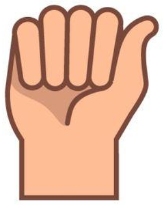

Initialisation…
?
Appuie sur Start
A

La caméra s'allumera ici
Je vois : —
L'application a besoin de ta caméra pour voir ta main et vérifier tes signes. Aucune image n'est envoyée ni enregistrée : tout reste dans ton navigateur.
Apprends l'alphabet manuel de la langue des signes, lettre après lettre, avec ta webcam.
Conseil : place ta main bien dans le cadre, paume vers la caméra, avec une lumière correcte.
Initialisation…

Je vois : —